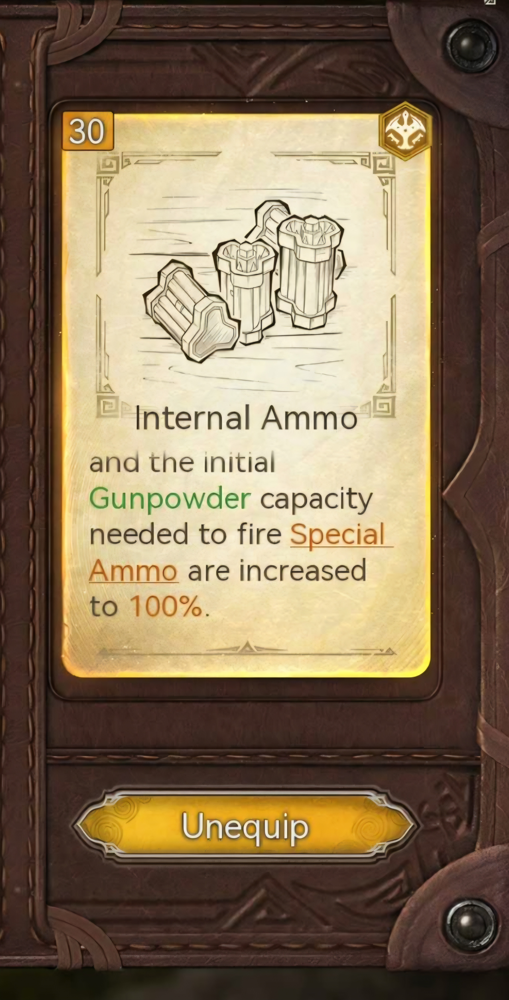
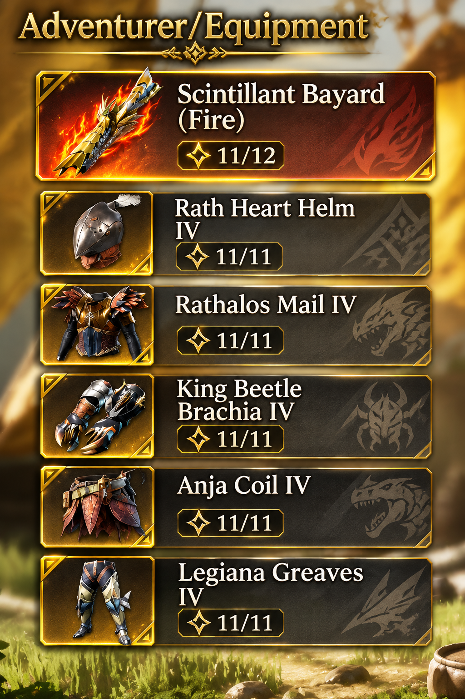
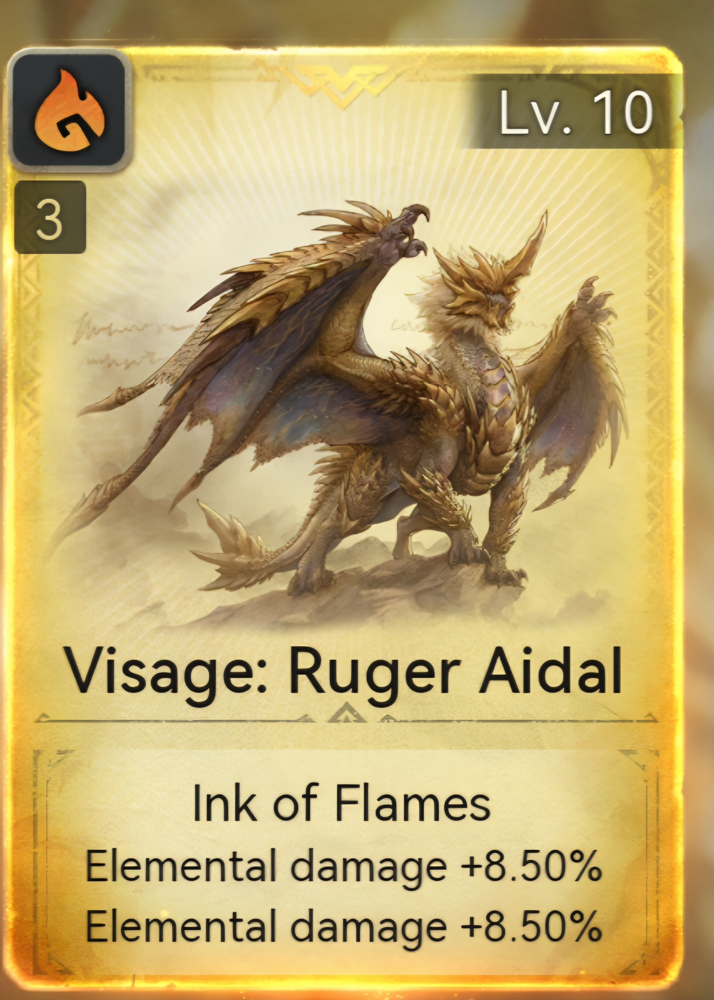
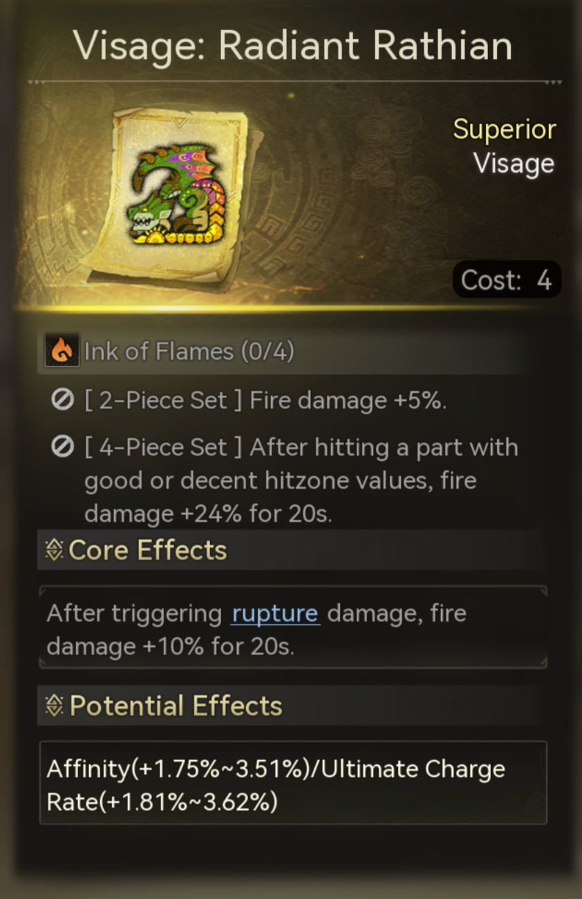
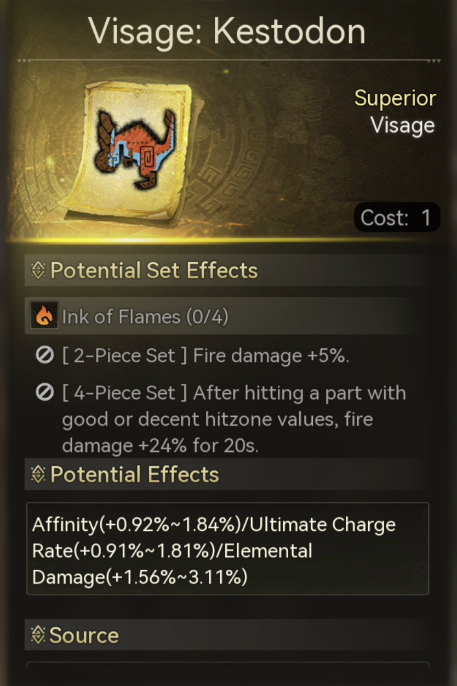
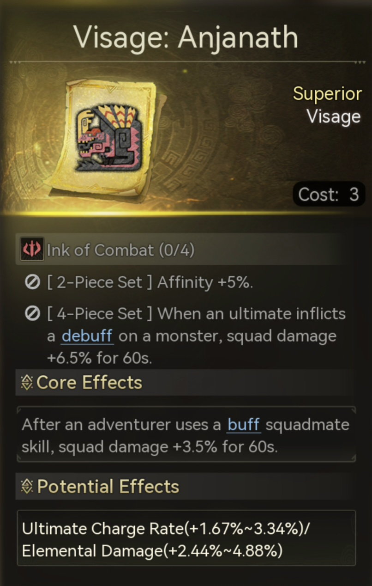
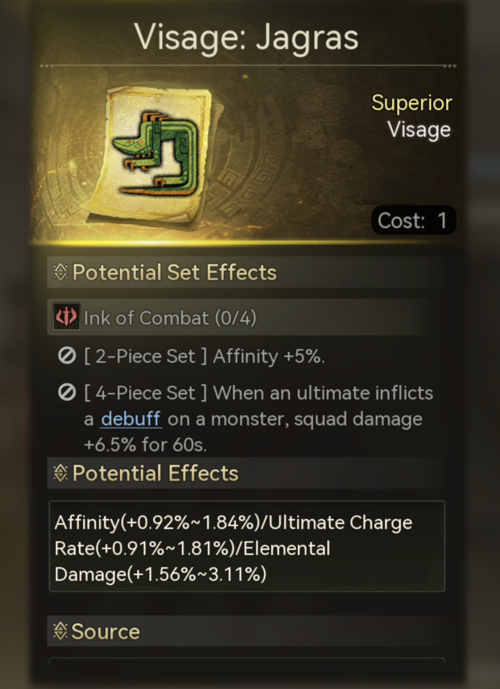
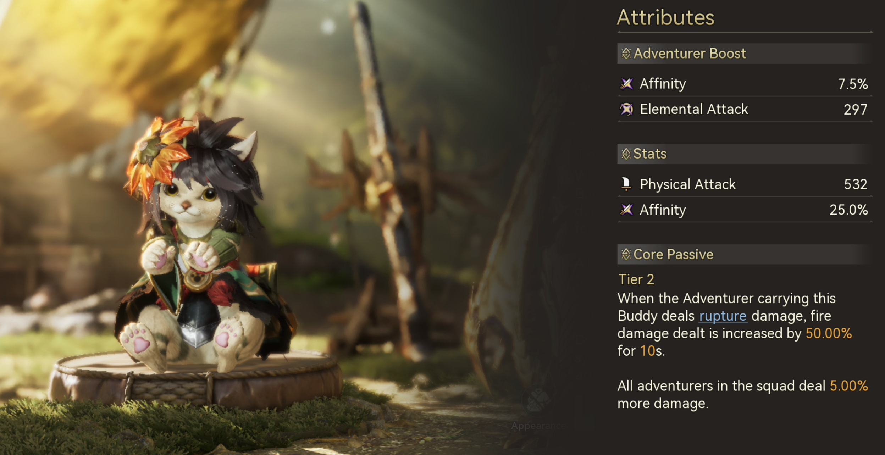

How to Effectively Hunt with MC Using Heavy Bowgun
Hello, hunters! In this quick guide, I'll show you how to farm monsters quickly and easily in Free Hunt using the Main Character (MC) with Heavy Bowgun and the Fire Apex Weapon build.
With this setup, you can take on ★12 and ★13 monsters even when they aren't weak to Fire. It's particularly optimized for Radiant monsters with Fire weaknesses to maximize damage.
Start with Slicing Special Ammo
When you enter the hunt, press and hold Skill 2 to select Slicing Special Ammo. It's my preferred ammunition for breaking monster parts quickly and chaining staggers, helping you farm breakable parts efficiently.
Switch Your Primary Ammo to Spread Ammo
Press and hold Skill 2 to select Spread Ammo for your primary ammunition. In my opinion, Spread Ammo is currently the best choice for rapidly recharging both Skill 2 (Special Ammo) and Skill 3 (Wyvernheart), so you can use both consistently to deal heavy damage.
Use Insight Internal Ammo
Equip Insight Internal Ammo to start the hunt with maximum Wyvernheart and Special Ammo. This lets you begin your damage rotation immediately.

Keep the Rotation Going
- Enter the hunt with your special resources ready using Insight Internal Ammo.
- Use Slicing Special Ammo to focus on breakable parts and staggers.
- Use Spread Ammo to refill Skill 2 and Skill 3.
- Activate Wyvernheart when you have a good opening.
- Repeat to maintain damage and efficient part farming.
Video Showcase
The gameplay showcase demonstrates how I prepare for Free Hunt, select ammunition and maintain the Heavy Bowgun damage rotation.
The Meta Fire Apex Build
A high-damage Heavy Bowgun setup for efficient Free Hunt farming, built around the Fire Apex Weapon and the Slicing → Spread → Wyvernheart rotation.
Weapon & Equipment

The Skills
The Visages
Prioritize Element Damage Boost and Affinity across your Visages while activating the Ink of Might 2-piece effect for +5% Affinity.
Ruger Aidal
Use Ruger Aidal as your Main Core Visage. Prioritize double Element Damage Up for both main stats.

Radiant Rathian
Use Radiant Rathian as your secondary Visage, with double Affinity for both main stats.

Affinity Visage
Choose any 1-cost Visage with double Affinity, or Affinity and Element Damage Boost.

Ink of Might
Use a Visage from Ink of Might to activate its 2-piece effect for an additional +5% Affinity.

3-Cost & 1-Cost Options
For any 3-cost Visage you choose, preferably roll double Element Damage Boost. For a 1-cost Visage, prioritize double Affinity, or Affinity with Element Damage Boost.

Best Buddy — SSR Kojiro
SSR Kojiro is the current best Buddy for this Fire Apex Heavy Bowgun setup. Using Slicing Ammo to trigger Rapture damage grants +50% Fire Damage for 10 seconds each time the Rapture effect is triggered.
